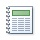

Звіти 
Звіти використовуються, щоб форматувати, зводити та представляти дані. Звіт зазвичай відповідає на певне запитання, наприклад "Яку суму отримано від кожного клієнта цього року?" або "У яких містах розташовано наших клієнтів?". Кожен звіт можна відформатувати так, щоб представити відомості в ньому найзрозумілішим способом.
Ви можете будь-коли запустити звіт, і в ньому завжди відображатимуться поточні дані з бази даних. Звіти зазвичай відформатовано для друку, але також можна переглядати їх на екрані, експортувати до іншої програми або надсилати як вкладення в повідомлення електронної пошти.
На головну